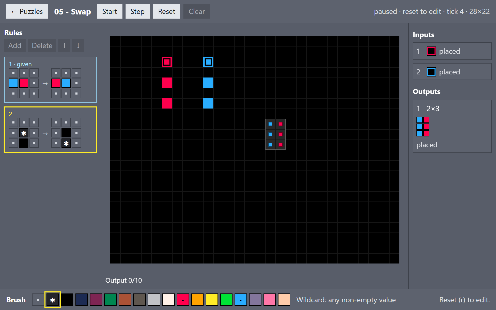
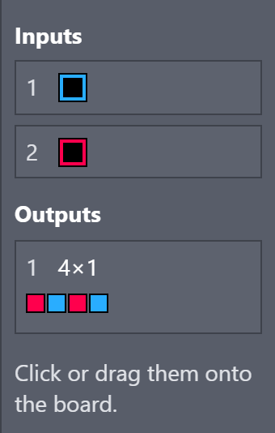
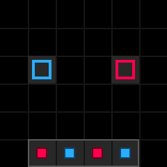
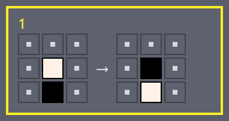
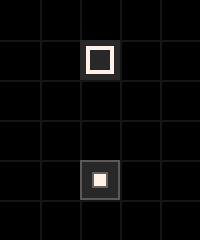
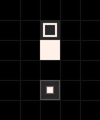
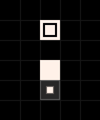
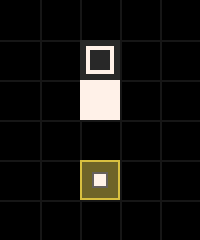
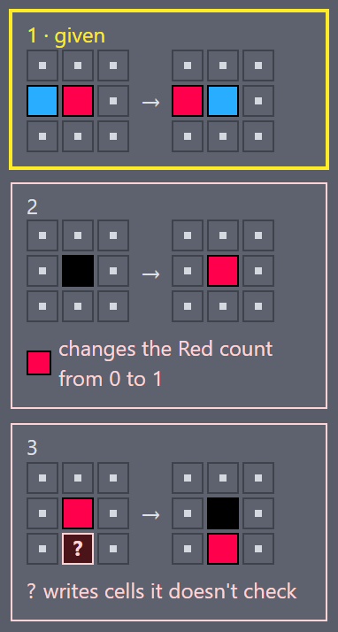
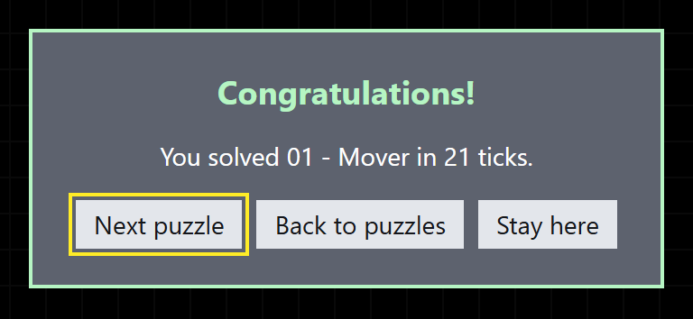

How to play
Rewriting is a puzzle game about rules that rewrite a grid of colors. Each puzzle has inputs, which make a color, and outputs, which want a pattern of colors. You write the rules that carry colors from one to the other. Fill every output 10 times in one run and the puzzle's solved.
The screen

- Rules, on the left, are what you write. They apply in order, from the top.
- The board, in the middle, is where they run. Black cells are empty. The board is as big as the window has room for.
- The tray, on the right, holds the puzzle's inputs and outputs until you put them on the board.
- The brushes, along the bottom, are for painting rules and the board.
- The buttons, along the top, start, step through and reset a run. At the other end of the bar is whether you're editing or running, how many ticks the run has taken, and the board's size.
Inputs and outputs


on the board.
To put an input or output on the board, click it in the tray and then click where it should go, or drag it there. Drag it around the board to move it. To take it off again, right-click it or drag it back to the tray. Inputs and outputs can't overlap, and they have to fit on the board.
Inputs are drawn as a ring of their color. At the start of every tick, an input fills its cell with its color if the cell is empty. If its own color is still there from the last tick, it waits. If any other color is there, it's blocked: the run stops, and the input is marked !!.
Outputs are drawn as an outlined region, with a small square in each cell showing the color it wants there. A black square means that cell has to be empty. At the end of every tick, if every cell in the region matches, the output takes the colors, emptying the region, and that counts once. The counts are under the board. When a puzzle has more than one output, they're numbered, on the board and in the tray.
Rules

A rule is two 3×3 patterns. The left side is a pattern to look for on the board, and the right side is what to replace it with. The rule above looks for a white cell with an empty one below it, and swaps them, so white falls one cell. Every tick, it applies everywhere on the board that it matches.
Each cell of a pattern is one of these:
- A color matches only that color, and on the right side, writes it.
- Empty, which is black, matches an empty cell, and on the right side, empties the cell.
- ✱ The wildcard matches any color, but not empty. Every wildcard in a rule has to match the same color, and on the right side, a wildcard writes that color. With wildcards in place of white, the rule above would make every color fall.
- Nothing means a cell isn't part of the rule. On the right side, it leaves the cell as the left side found it.
Rules don't turn or flip, so a rule that moves white down never moves it sideways. To move colors more than one way, write more rules. A rule's pattern can hang off the edge of the board, as long as every cell it uses is on it.
To change a rule, select it, pick a brush, and click or drag across the rule's cells to paint them. Right-clicking a cell sets it to Nothing.
How a tick works
A run goes one tick at a time, and each tick has three steps:
- Inputs fill their cells.
- Rules rewrite the board.
- Outputs that match take their colors, and count.

Before the run
Tick 1
Tick 2
Tick 3
Every rule looks at the board as it was before any of them applied, so a color that's moved can't move again until the next tick. That's why the whites above fall every other cell: a white with another right below it has to wait for that one to move first.
Matches that overlap don't all apply. Earlier rules go first, and one rule's matches go top to bottom, then left to right. Each match claims the cells it uses, and a later match that needs any of those cells is skipped. That's true even of a match that changes nothing, so a rule whose two sides are the same holds colors in place.
Puzzle colors
The colors a puzzle's inputs make and its outputs want are its puzzle colors, marked with a dot among the brushes. They only come from the inputs, and only go out through the outputs, so:
- You can't paint them on the board.
- Your rules can move them around, but can't make or destroy them: a rule can't change how many cells hold each puzzle color. Nor can it change how many hold the wildcard, since a wildcard could be any color.
- A rule can only write cells its left side checks, so that it can't write over a color without knowing it's there. Cells it writes without checking are marked ? on the left.
Any other color is yours to use however you like. Paint it on the board, as walls or markers, and make, change or remove it with rules.

A rule that isn't allowed is outlined in red with what's wrong, and runs won't start until it's fixed.
Some puzzles come with given rules, outlined in blue. You can't change, move or delete them, they always apply before yours, and they don't have to follow the restrictions above. Working out how to use them is usually the puzzle.
Your first puzzle
01 - Mover has one input that makes white and one output that wants white. Here's a way to solve it:
- Click the input in the tray, then click near the top of the board to put it there.
- Drag the output from the tray to a few cells below the input, in the same column.
- Click Add to add a rule. Pick the white brush and click the middle cell on the left and the one below the middle on the right. Then pick the black brush, for empty, and click the one below the middle on the left and the middle on the right. That's the rule from Rules.
- Click Start. White falls from the input to the output, and when the output has taken it 10 times, the puzzle's solved.

When a run doesn't do what you expect, pause it and step through it a tick at a time. Reset ends the run and goes back to editing. Runs work on a copy of the board, so whatever you painted is still there.
Controls
| To | Click | Or press |
|---|---|---|
| Start or pause a run | Start | Space |
| Run one tick, starting a run if there isn't one | Step | S |
| End the run and go back to editing | Reset | R |
| Empty the board | Clear | C |
| Add a rule after the selected one | Add | A |
| Delete the selected rule | Delete | D or Delete |
| Select a rule | The rule | ↑ ↓ |
| Move the selected rule | ↑ or ↓ | Shift + ↑ ↓ |
| Choose a brush | The brush | ← → |
| Paint a rule's cells | Click or drag across them. Right-click sets Nothing. | |
| Paint the board | Click or drag. Right-click erases. | |
| Pick up an input or output | Click or drag it, in the tray or on the board | |
| Put it back in the tray | Right-click it, or drag it to the tray | |
| Let go of what you're holding | Right-click | Esc |
| Go back to the puzzles | ← Puzzles | Esc |
You can only change things between runs, so reset a run to edit. Nothing is saved: leaving a puzzle or reloading the page starts it over. Resizing the window between runs resizes the board, and inputs and outputs that no longer fit go back to the tray.